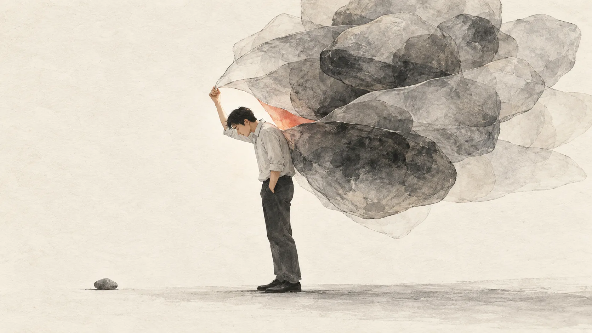
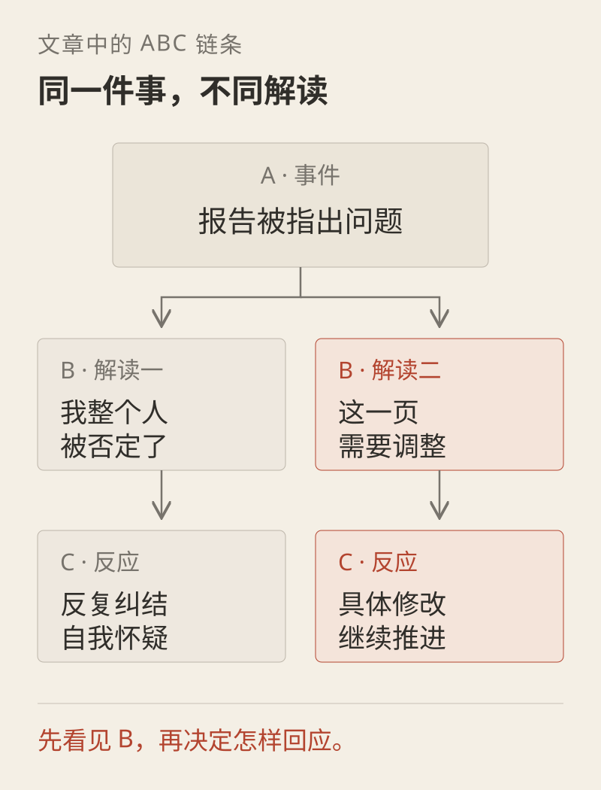

我用了87分钟，看懂了一条讲坛经的视频
事情是这样的。
前天晚上我本来只想刷五分钟手机，然后就睡觉。结果刷到一条视频，讲坛经的，时长87分钟，我居然从头看到了尾。
看完之后我坐在那愣了一会，脑子里只剩下一个念头。
不对，准确地说，是我意识到，刚才那个正在翻腾的东西，它只是一个念头而已。
我知道你一听到坛经两个字，可能已经准备划走了。先别急，我保证接下来这几千字里，没有一个字是催你去烧香拜佛的。
它讲的其实是一件特别世俗的事。就是，为什么同样一件事砸在不同人头上，有人三天缓不过来，有人睡一觉就翻篇了。
它的答案是，压垮你的从来不是那件事，是你给那件事加上的那一层。
那一层东西，佛经里叫念头。

先把背景用两句话交代了，不然后面你会接不上。
坛经这书，在中国佛教里地位特别特殊。它是整个大藏经里，唯一一本中国人自己写出来、还被称作经的书。其他那些经，什么金刚经、心经，都是鸠摩罗什、玄奘这帮人从梵文翻译过来的。
只有坛经，是慧能自己讲的，他徒弟在旁边记下来的。
而慧能这个人，不认字。
一个不认字的人，留下一本经，还开创了禅宗里顿悟这一派。这事本身就挺魔幻的，魔幻到我每次想起来都觉得，认知这个东西，跟学历真的没多大关系。
那这条视频到底讲了什么。我把它最核心的那套东西，用第一性原理拆了一遍，你会发现它立在一个特别朴素的链条上。
事情发生，这是A。你的反应和情绪，这是C。大多数人默认A直接导致了C。
但中间其实还夹着一层B，是你对这件事的解读。
A不产生C，B才产生C。
这东西在心理学里有个名字，叫ABC理论。视频里也提到了。真正的因果链是，同一件事，因为B不一样，砸出来的C就完全不一样。

但这条视频比ABC理论更狠的地方在于，它又往下拆了一层。
它说，那个B，也就是你的念头，甚至都不是你。
我听到这段的时候是被戳了一下的。它说现代脑神经科学发现，我们脑子里大概有30几个区域，会因为外部刺激各自升起信号。你看到一个好看的姑娘想多看两眼，是某个区域亮了。你饿了想吃东西，是另一个区域亮了。你想挣钱，又是另一个区域。
而这30几个信号里，某一个被激活得特别强的时候，你会把那个1/30的信号，误认成你自己的念头，甚至误认成你整个人。
所以为什么你越想清空大脑，它就越吵。
因为你把信号当成了自己。你越用力去赶它，越是承认了它就是你的一部分。
那怎么办。它的答案是四个字。
我是我，念头是念头。
我第一次听到的时候觉得，这也太轻飘飘了吧。
但你想想看，这句话其实是一句权限声明。它在说，那个念头可以存在，但它没有资格代表你。
铺垫完了，下面进入正题。这条视频的主体，是把坛经拆成了七个模块，我一个个过一遍。
一无念
视频开头讲的是慧能那首著名的偈子，菩提本无树，明镜亦非台，本来无一物，何处惹尘埃。
然后它给了个我觉得特别妙的翻译。它说这句话用大白话讲，就是你在擦一个根本不存在的镜子。
这句一说我就懂了。我们从小到大干的很多事，都是在擦一个不存在的镜子。你觉得自己不够好，于是拼命擦。你觉得自己情绪管理不行，于是天天跟自己的情绪打架。
擦到最后累得半死，回头一看，镜子根本没有。
那到底怎么叫无念。视频给了一个我觉得最关键的区分。
它说佛学里有两个法门，一个叫正定，一个叫正念，很多人分不清。
正定是什么呢，就是你念一句佛号，或者念一个咒，天天念，念到脑子里只剩下这一句。用这一个念头，把那一万个念头压住。就像少林寺那句万法归一，底下还有一句叫一归何处。你练正定练到最后，那个咒本身也不见了，你就成了。
那正念是什么。正念是慧能和禅宗这一派主张的，它不玩压制这一套。
无念，从来不是没有念头，而是不被这些念头打扰。
我看到这的时候突然想通一件事。我之前试过各种冥想App，都坚持不下来，因为我一直在试图把脑子里的念头清干净，结果越清越多，然后我就放弃了。
原来方向一开始就是错的。不是清空，是不纠缠。
那具体怎么做到。视频给的那个方法，我觉得可以裱起来挂在墙上。
就是在大脑里，把「你」和「念头」之间，劈一刀。
它是这么教的。你被领导骂了，你很难受，这时候你问自己一个问题。
是领导在为难我，还是我那个「认为领导在为难我」的念头，在为难我。
这两个问法，一字之差，但你念出来的时候，感受是完全不一样的。
因为你没法立刻让领导消失，但你可以立刻不认领那个念头。
它甚至教了一个特别损的怼人话术。领导问你为什么不干，你说，是你在为难我的念头，我的念头现在在为难你，不是我不想做。
这段我听着觉得有点过于爽文了。但它背后那个东西是真的，就是区隔这个能力。
我一下就想到那本被讨厌的勇气里讲的课题分离。你是你，我是我。但禅宗比它更狠一层，禅宗连「我」都要区隔一下，叫念头是念头，我是我。
视频最后给了一句可以当微信签名的话，于诸境上，心不染，曰无念。
然后它自己又翻了一遍，我更喜欢的版本是，不是不起念，而是对境不粘。
念头来了就来了，你看着它，它自己会走。因为它只是一个脑区的神经信号，它没有你的授权。
扣一下主线。这一节讲的就是，你不是你的念头。
二心动
第二个模块叫心动。它从那句特别有名的话讲起。
不是风动，不是幡动，仁者心动。
视频里的例子我觉得特别真实。同样一个烂项目，同样一个难搞的领导，同样被抢功。有人整夜失眠，有人第二天该干活干活。
真的是那件事本身吗。
它又搬出了ABC理论，接上我前面说的那个链条。A是事件，B是你的信念系统，C是结果。结论是B导致了C，而不是A。
然后它讲了一个庄子的故事，我特别喜欢这个。
说一个人划着船，对面来了一艘船冲着他过来。他大喊你快让开，船不理他，咣一下撞上了。他火了，跳上那艘船准备开骂，结果发现船上根本没人，是一艘空船。
火一下就没了。
因为让他生气的从来不是撞船这件事，是他脑子里那个「对方是个不守规矩的人」的念头。船上没人，这个念头就不成立了，气也就没地方生了。
庄子管这个叫虚己以游世，号召我们做一个空船的人。
我看到这段的时候确实想了一下，我最近生的那些气，有多少是因为对方本人，有多少是因为我先给对方安了一个人设。
然后它讲了一念转境。说真正的高手不改变外面的境，改变的是自己的念头。
这里它给了三个词，叫新知、新人、新身份。就是你想破局，要么去学点新东西，要么去见点新的人，要么给自己一个新的身份。因为这三样东西，都会反过来调你的念头。
扣一下主线。这一节是，你在意的往往不是那件事，是你给那件事配的那套解读。
三世间
第三个模块是世间，其实就是王阳明讲的在事上磨，佛经里叫不离世间觉。
这一节，是整条视频里最戳我的一段。
它说我们这代人有一个特别普遍的病，就是总觉得现在所处的环境是个过渡。等我跳去更好的平台就好了，等我熬过这一阵就好了，等我遇到那个贵人就起来了。
于是你现在这份工作，你一直把它当成过渡。你不认真做，因为你觉得这里不是你的终点。
你走向彼岸的每一步，本身就是彼岸。
我第一次听的时候有点被震到。我们总是把彼岸当成一个未来的、别处的地方，觉得要攒够了、熬过去了才配到。但这句话说的是，根本没有那个别处，你脚下这一步就是。
它还引了胡适老爱用的那句华严经，日拱一卒，无有尽，功不唐捐终入海。
功不唐捐这四个字，意思是你今天干的事，不管大小，不管好坏，都不会白干。
然后它引出了一个我觉得特别硬的词，直面。
它讲金刚经的金刚，不是庙里那个四大金刚，是钻石的意思。diamond。
所以金刚经这三个字的画面感其实是，像钻石一样硬，正面刚。
很多人遇到困难第一反应是绕。但牛的人遇到困难是，先站到它面前，先看清楚它到底是个什么东西。
视频里有句话我记下来了。你逃的每一件事，都是你没上的那一节课。
你但凡逃避的事情，未来总会以某种方式，重新出现在你的人生课题里。
它拿西游记举例子，说为什么三打白骨精必须打三次。因为前两次，唐僧和孙悟空都没有直面他俩真正的问题，就是把话说明白这件事。直到第三次把矛盾彻底暴露了，两个人坐下来重新谈了一次，后面取经路上才不再折腾。
这个解释我觉得不一定符合原著，但它讲的那个道理是对的。没解决的问题，会换个马甲再来找你。
扣一下主线。这一节是，别把你现在待的地方当成过渡，它就是你的道场。
四功德
第四个模块讲功德，我觉得是整条视频里最能治职场病的一节。
它先说了一个我们都很熟悉的场景。加班到最晚，群里回复最快，汇报做得最漂亮，存在感刷得足足的。可是年底一盘，自己的本事一点没涨。
它说，我们很多时候不是在成长，是在求一个被看见、被认可。
然后就讲到梁武帝和达摩那段公案。梁武帝修了一堆庙、度了一堆僧，问达摩，我功德几何。达摩回了四个字，实无功德。
为什么没有。因为你在问。你问的那一下，道心就乱了。你做这件事是为了换一个认可，那它就变成了一场交易。
视频里有个比喻我觉得挺妙。你去庙里求菩萨，说菩萨给我100万，菩萨真给了你100万，那你是不是就只有100万，可菩萨本来能给你五个亿。
所以真正该求的是什么呢，是求天下苍生都有钱赚，而你也是苍生的一员，顺带手的事。
这个求法我觉得有点狡黠，但很聪明。因为它把「我」从这场交易里摘出去了。
那到底什么是功德。坛经里的定义是，见性是功，平等是德。
见性是什么呢，就是你分得清我和我的念头了。平等是什么呢，就是你觉得外面那些好的坏的，都差不多。
这两样东西有个共同点，它们都长在你自己身上。不依赖平台，不依赖外物。
所以你在一个公司干得再好，如果那个本事是长在平台上的，你换个地方就没了。只有长在你身上的那部分，才是你的功德。
这里它讲到一件我觉得很扎的事，叫表演性上班。
你想想现在压在你身上那些工作量，哪些是在长本事，哪些只是在演给谁看。
你在这个世界上，不需要任何人的认可。
这句话听着像鸡汤对吧。但你把它跟前面那句「念头是念头，我是我」连起来看，你会发现它讲的是同一件事。那个需要被认可的东西，它也是一个念头。
扣一下主线。这一节是，真正的收获是长在自己身上的，不是别人给的。
五见己过
第五个模块叫见己过。坛经原话是，若真修道，人不见世间过。
翻译成人话，你整天盯着别人的错，最先耗干的是你自己。
它给的场景太真实了。同事甩锅，领导偏心，那边还有人抢功。你整天在心里跟他们过招，气得胸口发闷，活还没干。
注意这里，视频点出了一个我觉得特别狠的地方。它说，问题就出在「在心里」这三个字上。你是在心里跟他们过招，不是直接跟他们过招。
你在心里跟一个人打架，对方根本不知道，也没有任何损失，但你一个人被这场架耗了一整天。
它还说，往往你特别讨厌的那个人的某类行为，大概是你自己内心的投射。你说别人太爱炫富，是因为你也想要那个东西。
我看到这的时候确实有点被冒犯到，但也承认它是真的。
然后它讲了坛经里另一句话，叫常自见己过，与道即相当。就是经常看看自己有什么问题，你就已经跟修道差不多了。
它说这句话的要求，比「不见世间过」更高。不见世间过是放过自己，常自见己过是主动打磨自己。
视频里还讲了一个我觉得很实用的东西。它说你怎么判断自己是不是在耍情绪，就看你开始问「怎么办」的时候。
你问跟领导怎么沟通，答案是坦诚沟通。怎么坦诚沟通，有话直说。怎么有话直说，那完了，说不下去了。
它说，一旦你陷进how的问题里，往往不是你不知道怎么办，是你的情绪在提问。
这句话我觉得可以当个自检开关。我什么时候开始追着问「具体怎么做」，我可能就不是想做事，是不想做事。
扣一下主线。这一节是，把挑剔别人的劲收回来，用在自己身上。
六顿悟
第六个模块是顿悟，也是我觉得整条视频里最实用的一节。
坛经里的话是，迷闻经累劫，悟则刹那间。
你迷糊的时候，听多少经典都是白听，就那么堆在那。但真正变化发生的那一下，就是一刹那。
那这一刹那是怎么来的。视频给了个我觉得特别反常识的说法。
它说，那一刹那，往往不是你想通了，是你做了一下。
它用吃臭豆腐和折耳根打比方。你第一次闻到折耳根，避之不及，闻一下都受不了。但你朋友在旁边，你吃一口，再吃一口，突然有一天你发现，你已经习惯了，甚至爱上了。
它不是你想明白的，是你做了一下，拿到了一个正向反馈。
所以它对「贵人」的定义也重写了。真正的贵人不是那个把你说明白的人，而是那个你信他，他拎着你做了一次的人。
教一万人学会游泳的道理，不如一脚把你踹水里。
然后它给了一个特别落地的动作，叫最小步骤。
它说人一焦虑，就会把问题放大。你一想到要跳槽，脑子里立刻开始演，万一找不到怎么办，万一面试不过怎么办，万一没下家怎么办。你放大的不是现在，是三年五年一辈子。
但这个时候真正该做的是什么，是回头看那个最小的动作。
要跳槽，最小的一步是辞职吗。不是，是把简历写出来。
写个简历有损失吗。没有。但你已经动起来了。
万仞高山，只登一步。
王阳明这句话它用得特别好。我看这段的时候，脑子里在想我那些拖着没做的事，每一件我都能想出那个最小的一步是什么，我就是一直没迈。
扣一下主线。这一节是，别等想通，先做一下，反馈会替你想通。
七自渡
最后一个模块是自渡。视频说，没有人能替你悟。
它讲了一句我觉得挺刺耳的话，说知识付费某种程度上是个伪命题。
它说，劝人读书，有时候像刨人祖坟。因为你劝一个人改变，其实是在否定他过去那套东西存在的价值。而很多人宁可不要一个美好的未来，也不愿意否定自己过去的意义。
这段我听着有点不舒服，因为我自己就是干内容这行的。但我得承认，它说得有道理。
它还讲了一个我觉得挺玄、但挺有意思的概念。说你想学一样东西，为什么坚持不下去，佛学里叫业力太大。业力大过能力。
那能干掉业力的是什么呢，是愿力。你到底有多想改变。
无愿力，不谈能力。
我在这一句上停了挺久。因为这句话把「我为什么学不下去」的答案，从「我没天赋」「我没时间」，换成了一个特别赤裸的问题，你到底是不是根本没那么想。
最后它用了坛经里的一句话收口，叫说似一物即不中。
意思是，任何你能说出来的东西，一说出来就不是它了。语言这个东西，有太大的欺骗性。
它举了个例子我觉得特别妙。它说，假设你被一脚踹到德国，你一句德语都不会，你怎么点菜。你拿手指一下，比划一下，人家把饭放这，你就吃了。你怎么付钱，把钱包一打开，让人家自己拿。
全程一个单词都没说，但你所有事都办了。
所以真正的东西，从来不是听来的，是你自己撞见、自己做出来的。
它最后说，路是自己走通的。迷的时候要有人渡你，悟了之后，只能自渡。
扣一下主线。这一节是，没有人能替你悟，也没有人能替你走路。
收关于那一层
好，七个模块过完了。我把它们连起来说一下。
现在回头看这条视频，我觉得它其实是在讲一件特别简单的事，就是我们大部分的痛苦，是自营的。
外部世界给我们一个刺激，这个是免费的，我们控制不了。但从刺激到痛苦之间那一段加工，是我们自己做的，而且往往是加班加点做的。
所以这条视频的所有内容，其实都指向同一个动作。就是把加工的这段，从自动挡，切成手动挡。
你不再默认「他骂我等于我不好」，你开始问，他骂的是这件事，还是我这个人。你不再默认「我在这个破公司只是个过渡」，你开始问，我现在这一步能不能走扎实。
这个动作，佛经里叫转念。
而放到今天，我觉得它有一个特别现实的意义。
我们这代人面对的最大问题，其实不是事情太多，是念头太多。以前一个人一辈子能接触到的信息是有限的。现在你每天被推着看的、被迫要比较的、被动要焦虑的，是过去的几十上百倍。
AI能替你干很多活，但它替不了你转念。它能帮你把PPT写完，但不能帮你决定，领导那句话到底是不是针对你这件事。
这可能是AI时代里，最贵的一个能力。不是会用工具，是能把自己从念头里摘出来。
写到这里，我得说实话。
这条视频最后是在卖课的，199，中间也插了几次。你要是冲着我上面写的这些去买课，我得先把这句话说在前面。
但内容本身，是真东西。我把它能拿走的部分都摘出来了，你不买课也能拿走。
如果你只记住一句话，我希望是这句。
你不是你的念头。
那个在你脑子里反复播放、让你凌晨三点睡不着的声音，它只是30几个脑区里，某一小块地方的一次放电。它很吵，但它没有资格代表你。
你可以看着它，然后该干嘛干嘛。
最后回到最开头那个东西。
压垮你的，从来不是那件事，是你给它加上的那一层。
那一层是你自己叠上去的。
那你也一定可以，自己把它卸下来。
以上，既然看到这里了，如果觉得不错，随手点个赞、在看、转发三连吧，如果想第一时间收到推送，也可以给我个星标⭐
谢谢你看我的文章，我们，下次再见。
/ 作者 卡兹克